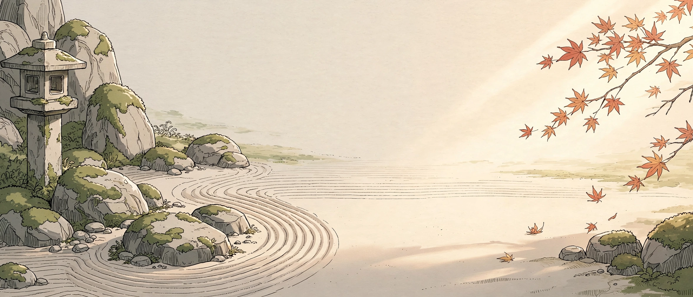

FREE
FREE蜘蛛と鬱蒼とした森
苔むした暗い森と静かな蜘蛛。雫の光る、しっとりした世界。
PC専用 ♡ 着せ替えブラウザ
森の朝、海の底、二人だけの月面——。スマホを着せ替えるみたいに、ブラウザ全体をその日の気分で着せ替えられる、キラキラ可愛いブラウザです。テーマは9種類、ぜんぶ無料♡

Download
お使いのPCに合わせて選んでね。どの版も無料で、アカウント登録はいりません。
Mac / Windows / Linux ・ 無料 ・ アカウント登録なし
Dress up
下の名前を選ぶと、ブラウザの世界が切り替わるよ。実際のアプリでは、9テーマぜんぶを同じ手軽さで着せ替えられます。


 鹿と暖かな森
月と二人だけの宇宙飛行士
あなただけの美少女恋人
ゲーム女子とレトロなネオン空間
鹿と暖かな森
月と二人だけの宇宙飛行士
あなただけの美少女恋人
ゲーム女子とレトロなネオン空間
名前を選ぶと着せ替えの雰囲気が伝わります（実際のアプリでは9テーマぜんぶ使えます）
Themes
どの世界に住むかは、その日の気分で決めよ♡ 9つの小さな世界を用意しました。
※ テーマのイラストは、ただいまデザイナーさんが新しい絵に描き直し中です。ここでは仮のイラストで紹介しています。
FREE苔むした暗い森と静かな蜘蛛。雫の光る、しっとりした世界。
FREE夕日の木漏れ日と穏やかな鹿。あたたかい午後の森。
 FREE
FREE深海の静けさと大きなクジラ。光の差す青の底へ。
FREE暗い空、大きな月、二人だけの宇宙。静けさに包まれる夜。
 FREE
FREEおしゃれな都会の日常。カフェと本と夕方の街。
FREEネオンの部屋とレトロゲームの光。夜ふかしの相棒に。

FREE砂紋と苔と灯籠の庭園。ほっとする和の静けさ。
 FREE
FREEビビッドでポップなカラーの世界。気分を上げたい日に。
FREE開くたびに迎えてくれる彼女。柔らかなピンクの部屋で。
Features
毎日開く道具だから、実用面も手を抜きません。
9つのテーマは全部無料。課金要素はひとつもありません。
ブラウザの中に広告は入りません。世界観を壊さないことが約束です。
ダウンロードしたらすぐ使えます。ログインも個人情報の登録も不要です。
日々のブラウジングに必要な機能はひと通り。いつもの使い心地のままです。
「こんなテーマがほしい」「ここが使いにくい」「この世界が好き」——どんな声でも大歓迎です。届いた声は開発のいちばんの材料になります。次のテーマは、あなたのリクエストから生まれるかもしれません。
声をとどける ✉About ads
FAQ
はい。アプリもテーマも全部無料です。課金要素はありません。
まずはPC版のみです。
表示エンジンには実績のあるChromiumを使い、ログイン不要・データ収集なしで設計しています。